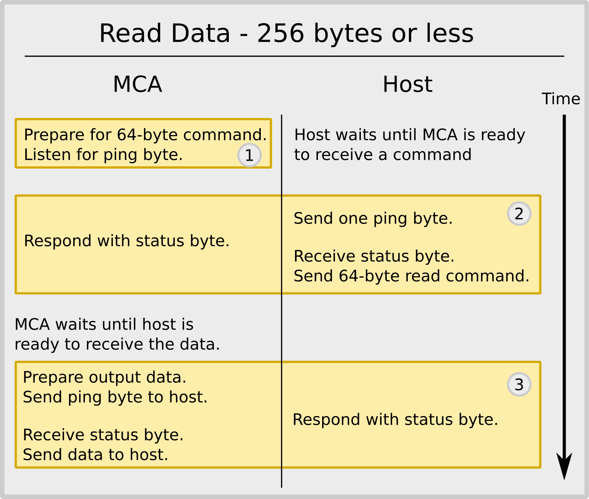
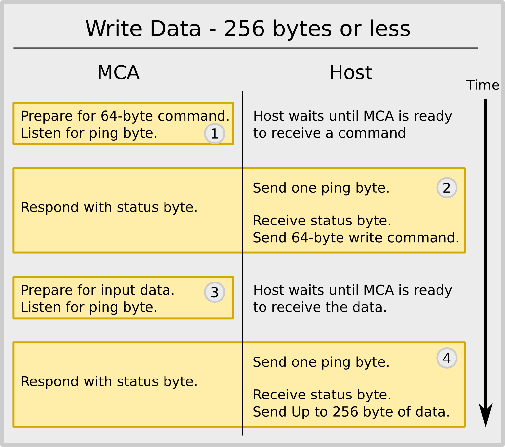

Common USART interface
Common USART Interface
MCA Software V3 – Common Serial Interface
All BPI product that use an embedded ARM processor share a common serial interface.
- Small and embedded computers enjoy easy access to the MCA without complexity and power consumption of a USB interface.
- Using commercial interface hardware, the user can cover long distances using RS485.
Brief description
We implement a half-duplex serial interface with software flow control. The implementation is geared towards the most restrictive case of a micro-controller that does not use interrupts. Each transmission is preceded by sending a single ping-byte to make sure the receiving side is ready to receive a command or data. Finally, large data transmissions are cut into 256-byte chunks so that the host processor does not need to implement a big data buffer.
Detailed description
Hardware
In most cases the RX and TX pins are connected directly to the ARM I/O pins. Hence their drive strength is limited to 1mA and they are sensitive to electrostatic discharge. As a result, cables connecting directly to the MCA should be interior and shielded cables. Long cable runs require proper decoupling and conversion to RS485 or other robust standards.
Speed
In the current implementation, the default baud rate is 115200 Bd. Users can change the device settings to program a different baud rate into non-volatile memory. The safest method to do this is to use the USB interface of the MCA, although it can be achieved via the serial port as well. The maximum speed supported by the embedded ARM is 3MBd.
The standard communication setting is 1 start bit, 8 data bits, 1 stop bit, no parity.
Protocol
The high level communications protocol is exactly the same as when using the USB interface. When using the serial interface on a small computer such as a Raspberry Pi or an Arduino, the user would launch the data server inside the mds_serial folder rather than the mds folder. All client software remains unchanged
When the host computer is a micro-controller, the generic C-code examples in the examples folder will prove helpful.
The communication protocol requires that the host first sends a command of 64 bytes, telling the MCA what the next action is going to be. That second action is to either send data to the MCA or demand data from the MCA.
Low-level Protocol
Each command or data transmission is prepared by a single-byte ping (0xFF). Embedded micro-controllers typically have a 1-byte receive buffer and can raise a flag if a byte has been received. On receipt of a ping-byte, the controller gets ready for the next step, and then sends an answer byte. In this case the next step may be to send a command, or to send or receive data.
The two flow diagrams below show the sequence for a write data and a read data command. Whenever the amount of data to be transferred is larger than 256 bytes, the software has to cut that into chunks of 256 bytes, with the last chunk be shorter, if needed.
When reading more than 256 bytes of data, box no. 3 will be repeated as often as is necessary. When writing more than 256 bytes of data, box no. 3 and 4 will be repeated as often as is necessary.
Timeout
Successful data transmission requires that the entire expected sequence of pings, commands and data transmissions is executed. If the host abandons a sequence or if an unrecoverable error occurs, the MCA will reset the USART interface to its idle state, box (1), 5 seconds after receiving the first ping.
|  |
|  |